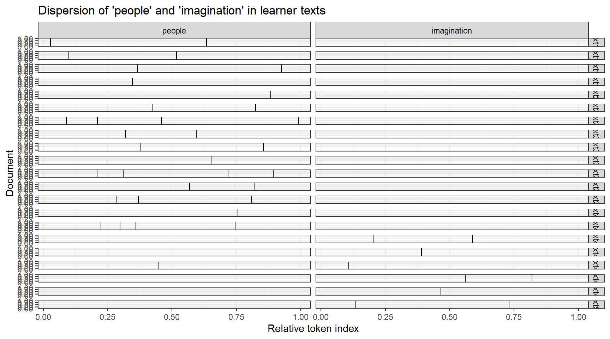
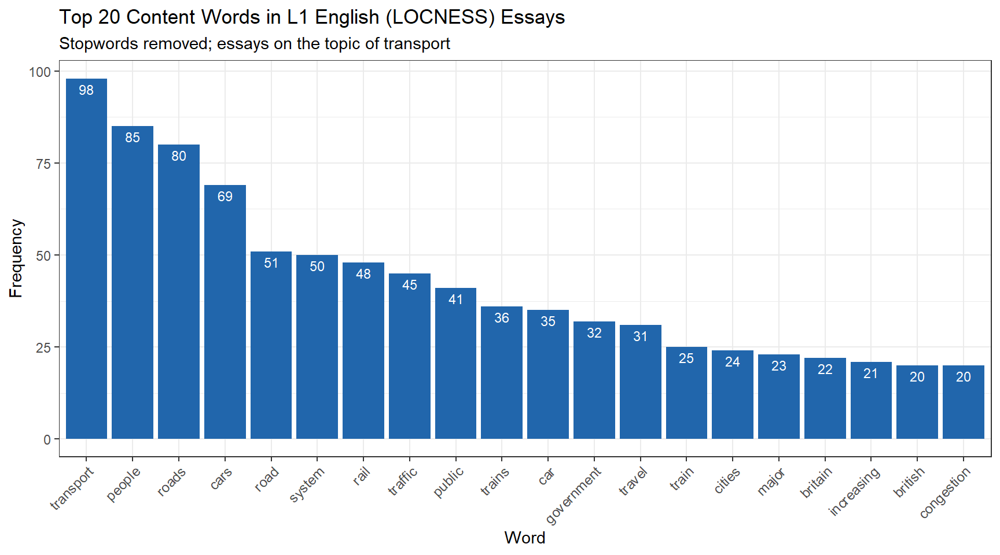
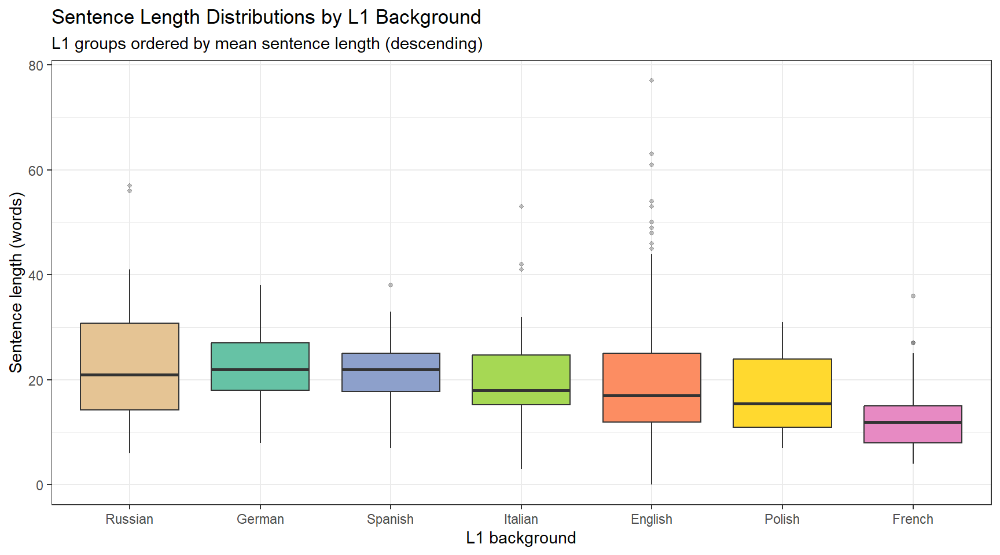
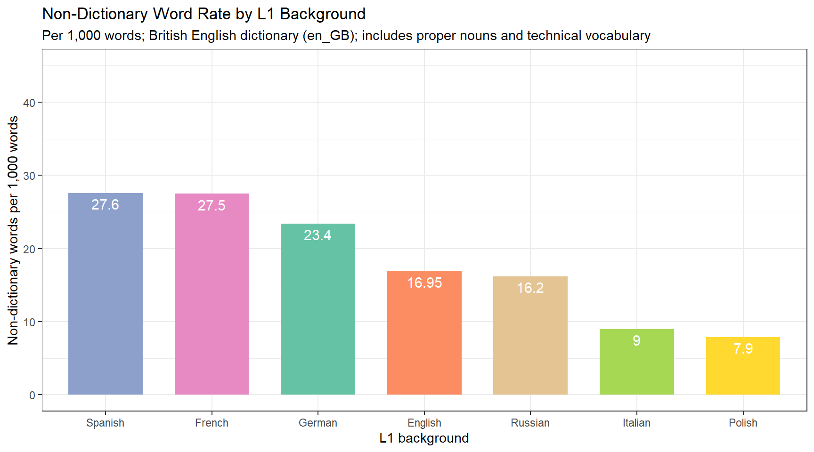

This case study tutorial demonstrates how to analyse learner language using R, covering learner corpus compilation, error analysis, the comparison of native and non-native speaker language, statistical testing, and pedagogical applications. It is aimed at researchers in second language acquisition and applied linguistics who want to apply computational corpus methods to learner language data.
Author
Martin Schweinberger
Published
2026
Great Court, The University of Queensland
Introduction
This tutorial introduces methods for analysing learner language — the written and spoken production of second language (L2) learners — using R. Learner language, also called interlanguage(Selinker, Swain, and Dumas 1975), is the systematic, rule-governed variety of language produced by a learner at a given point in their development. It differs from the target language in predictable ways that reflect the learner’s evolving grammatical and lexical knowledge, transfer from their first language (L1), and the specific instructional and communicative contexts they have encountered.
Corpus-based approaches to learner language — using collections of authentic learner texts known as learner corpora — have grown substantially since the 1990s (Granger 2009). They allow researchers to move beyond anecdotal observation and examine patterns of learner language systematically, at scale, and in comparison with the production of native or proficient speakers. The availability of well-annotated learner corpora and powerful R packages makes it possible to carry out many standard learner corpus analyses reproducibly, with relatively compact code.
This tutorial covers seven core analysis types, progressing from basic frequency-based methods to more linguistically sophisticated measures:
Concordancing — extracting and inspecting keyword-in-context (KWIC) lines
Frequency lists — ranking words by frequency, with and without stopwords
Sentence length — computing and comparing average sentence length across L1 groups
N-gram analysis — extracting bigrams and comparing their use between learners and L1 speakers
Collocations and collocation networks — identifying strongly co-occurring word pairs and visualising their relationships
Part-of-speech tagging and POS-sequence analysis — automatically tagging word classes and comparing grammatical patterns
Lexical diversity and readability — quantifying vocabulary richness and text complexity
Prerequisite Tutorials
Before working through this tutorial, please ensure you are familiar with:
Extract and sort KWIC concordances for words and phrases
Build and visualise frequency lists with and without stopwords
Compute normalised sentence length and compare it across L1 groups
Extract bigrams, normalise their frequencies, and test for significant learner–L1 differences using Fisher’s exact test with Bonferroni correction
Identify collocations using log-likelihood and visualise them as network graphs
POS-tag texts with udpipe and compare POS-sequence bigrams across groups
Calculate and compare multiple lexical diversity measures and Flesch readability scores
Detect and quantify spelling errors using hunspell
Interpret the results of these analyses in the context of second language acquisition research
Citation
Martin Schweinberger. 2026. Analysing Learner Language with R. The Language Technology and Data Analysis Laboratory (LADAL), The University of Queensland, Australia. url: https://ladal.edu.au/tutorials/learner_language/learner_language.html (Version 3.1.1). doi: 10.5281/zenodo.19332907.
Background: Learner Corpora
Section Overview
What you’ll learn: What learner corpora are, how they differ from native-speaker corpora, and an introduction to the two corpora used in this tutorial
A learner corpus is a principled, machine-readable collection of texts produced by L2 learners of a target language (Granger 2009). Learner corpora can contain written essays, spoken transcripts, or both. They are typically annotated with metadata about the learner — their L1 background, proficiency level, age, educational context, and the task type that elicited the text. This metadata makes it possible to compare production across L1 groups, proficiency levels, or task types, and to contrast learner production with that of native or expert speakers.
The analysis of learner corpora is central to the field of Learner Corpus Research (LCR), which applies corpus linguistic methods to questions in second language acquisition (SLA), language pedagogy, and language testing (Gilquin and Granger 2015). Common research questions include: Do learners over- or under-use certain words, constructions, or discourse markers relative to native speakers? Does lexical diversity increase with proficiency? Are spelling or grammatical error rates associated with L1 background? Do learners from different L1 backgrounds show distinct error profiles?
The ICLE and LOCNESS Corpora
This tutorial uses data from two well-known learner corpus resources:
ICLE — International Corpus of Learner English(Granger et al. 1993). ICLE contains argumentative essays written by advanced university-level EFL learners from 16 different L1 backgrounds. The essays in this tutorial are drawn from the German, Spanish, French, Italian, Polish, and Russian sub-corpora of ICLE.
LOCNESS — Louvain Corpus of Native English Essays(Granger, Sanders, and Connor 2005). LOCNESS contains essays written by native speakers of English, including British A-level students (the sub-corpus used here) and American university students. It provides the native-speaker baseline against which the ICLE learner data is compared.
Both corpora were compiled by the Centre for English Corpus Linguistics (CECL) at the Université catholique de Louvain, Belgium. The essays in this tutorial deal with the topic of transport, which is one of the prompt topics common to both ICLE and LOCNESS, enabling direct comparison between learner and native-speaker production on the same task.
Data Access
The ICLE and LOCNESS corpora are commercially licensed and cannot be distributed freely. In this tutorial we load pre-processed sub-samples hosted on the LADAL server, which is sufficient to follow all examples. If you wish to work with the full corpora, contact the CECL at UCLouvain.
Setup
Installing Packages
Code
# Run once to install — comment out after installationinstall.packages("quanteda")install.packages("quanteda.textstats")install.packages("quanteda.textplots")install.packages("tidyverse")install.packages("flextable")install.packages("tidytext")install.packages("udpipe")install.packages("koRpus")install.packages("stringi")install.packages("hunspell")install.packages("wordcloud2")install.packages("tokenizers")install.packages("checkdown")
Loading Packages
Code
# Load at the start of every sessionlibrary(tidyverse) # dplyr, ggplot2, stringr, tidyrlibrary(flextable) # formatted display tableslibrary(tidytext) # stop_words and tidy text utilitieslibrary(udpipe) # POS tagginglibrary(quanteda) # corpus and KWIC infrastructurelibrary(quanteda.textstats) # textstat_collocations, textstat_readability, textstat_lexdivlibrary(quanteda.textplots) # textplot_xray, textplot_networklibrary(koRpus) # lexical diversity measureslibrary(stringi) # string reversal for sorted concordanceslibrary(hunspell) # spell checkinglibrary(wordcloud2) # word cloud visualisationlibrary(tokenizers) # sentence splitting and word countinglibrary(checkdown) # interactive quiz questions
Loading the Data
We load seven essay files: two from LOCNESS (L1 British English, split across two files) and one each from six ICLE sub-corpora representing learners whose L1 is German, Spanish, French, Italian, Polish, or Russian.
[1] "It is now a very wide spread opinion, that in the modern world there is no place for dreaming and imagination. Those who share this point of view usually say that at present we are so very much under the domination of science, industry, technology, ever-increasing tempo of our lives and so on, that neither dreaming nor imagination can possibly survive. Their usual argument is very simple - they suggest to their opponents to look at some samples of the modern art and to compare them to the masterpieces of the \"Old Masters\" of painting, music, literature."
[2] "As everything which is simple, the argument sounds very convincing. Of course, it is evident, that no modern writer, painter or musician can be compare to such names as Bach, Pushkin< Byron, Mozart, Rembrandt, Raffael et cetera. Modern pictures, in the majority of cases, seem to be merely repetitions or combinations of the images and methods of painting, invented very long before. The same is also true to modern verses, novels and songs."
[3] "But, I think, those, who put forward this argument, play - if I may put it like this - not fair game with their opponents, because such an approach presupposes the firm conviction, that dreaming and imagination can deal only with Arts, moreover, only with this \"well-established set\" of Arts, which includes music, painting, architecture, sculpture and literature. That is, a person, who follows the above-mentioned point of view tries to make his opponent take for granted the statement, the evidence of which is, to say the least, doubtful."
[4] "But actually, these are not only music, painting, writing which are the spheres to which one's dreaming and imagination can be applied. First of all, there are quite a few other \"arts\". Probably, these are not as well-established as those mentioned above, but they are also \"arts\", and besides, they flourish nowdays. Let us take cinema, for example. Originally, in the beginning of the century, it was only an entertainment for common people. But today we may already call it \"art\". Now it has a hundred years of its history, and we all know, that cinema is really able to create masterpieces. Our contemporaries, film-directors of this \"dominated by science, technology and industrialization\" century create at present films like \"The Good, The Bad, The Ugly\", \"8 ½\", \"Once Upon a Time in America\", \"Shining\" et cetera, which, perhaps, in the next century will be regarded by our descendants just like w regard Raffael's pictures or Shakespeare's sonnets now."
[5] "By the way, I can hardly observe any connection between the \"domination of science, technology and industrialization\" over our world and the decline of arts. There may be some other reasons for it, but niether science nor technology themselves. Moreover, scientific and technological progress may very often create new means and new ways to apply one's imagination and \"materialize\"one's dream. For example, the newest computer technology, I think, has already created a whole range of ways to apply one's imagination - the computer design, animation and plenty of other things - and still has a great capasity for developement."
The text is stored as a character vector where each element is typically a paragraph or a short passage. The <ICLE-...> header tag that appears at the top of each file encodes metadata (the learner’s L1, proficiency level, and essay topic); we strip this in subsequent processing steps.
We also create two combined objects — one pooling all L1 texts and one pooling all learner texts — which we will use throughout:
Code
l1 <-c(ns1, ns2) # all native-speaker textlearner <-c(de, es, fr, it, pl, ru) # all learner text
Concordancing
Section Overview
What you’ll learn: How to extract keyword-in-context (KWIC) concordances for individual words and phrases, how to sort them by preceding or following context, and how to visualise dispersion patterns across texts
Key function:quanteda::kwic()
Concordancing — the extraction of words or phrases from a corpus together with their surrounding context — is one of the most fundamental operations in corpus linguistics (Lindquist 2009). A keyword-in-context (KWIC) display places the search term in the centre of a fixed-width window of preceding and following tokens, making it easy to inspect how a word is actually used across many instances. KWIC concordances are useful for: verifying that a search pattern is returning the intended tokens; examining how learners use a specific word or construction compared to L1 speakers; extracting authentic examples for pedagogical or analytical purposes; and as a preliminary step before more quantitative analyses.
Extracting a KWIC for a Single Word
We use quanteda::kwic() to extract concordance lines for the word problem and its morphological variants (e.g. problems) in the learner corpus. The pattern argument accepts a regular expression when valuetype = "regex" is set. A window of 10 tokens gives 10 words of left and right context.
docname pre keyword
1 text12 Many of the drug addits have legal problems
2 text12 countries , like Spain , illegal . They have social problems
3 text30 In our society there is a growing concern about the problem
4 text33 that once the availability of guns has been removed the problem
5 text33 honest way and remove any causes that could worsen a problem
6 text34 violence in our society . In order to analise the problem
post
1 because they steal money for buying the drug that is
2 too because people are afraid of them and the drug
3 of violent crime . In fact , particular attention is
4 of violence simply vanishes , but in this caotic situation
5 which is already particularly serious .
6 in its complexity and allow people to live in a
The output table has one row per match. The pre column shows the left context, keyword the matched token, and post the right context. The docname column identifies which document in the corpus the match came from.
Sorting Concordances
One of the most useful things to do with a concordance is sort it. Sorting by right context (the words immediately following the keyword) reveals collocational patterns to the right; sorting by reversed left context reveals patterns to the left.
Code
# Sort by right context (alphabetically by first word after keyword)kwic_prob |> dplyr::arrange(post) |>head(8)
docname pre keyword
1 text12 Many of the drug addits have legal problems
2 text39 , greatest ideas were produced and solutions to many serious problems
3 text34 violence in our society . In order to analise the problem
4 text33 that once the availability of guns has been removed the problem
5 text30 In our society there is a growing concern about the problem
6 text12 countries , like Spain , illegal . They have social problems
7 text33 honest way and remove any causes that could worsen a problem
post
1 because they steal money for buying the drug that is
2 found . Most wonderful pieces of literature were created in
3 in its complexity and allow people to live in a
4 of violence simply vanishes , but in this caotic situation
5 of violent crime . In fact , particular attention is
6 too because people are afraid of them and the drug
7 which is already particularly serious .
Code
# Sort by reversed left context (reveals patterns immediately before keyword)kwic_prob |> dplyr::mutate(prerev = stringi::stri_reverse(pre)) |> dplyr::arrange(prerev) |> dplyr::select(-prerev) |>head(8)
docname pre keyword
1 text33 honest way and remove any causes that could worsen a problem
2 text33 that once the availability of guns has been removed the problem
3 text34 violence in our society . In order to analise the problem
4 text30 In our society there is a growing concern about the problem
5 text12 Many of the drug addits have legal problems
6 text12 countries , like Spain , illegal . They have social problems
7 text39 , greatest ideas were produced and solutions to many serious problems
post
1 which is already particularly serious .
2 of violence simply vanishes , but in this caotic situation
3 in its complexity and allow people to live in a
4 of violent crime . In fact , particular attention is
5 because they steal money for buying the drug that is
6 too because people are afraid of them and the drug
7 found . Most wonderful pieces of literature were created in
Sorting by reversed left context is equivalent to sorting from the right edge of the left context inwards — it groups instances that share the same immediately preceding word (e.g. the problem, a problem, this problem), which is particularly useful for studying determiner or modifier patterns.
Visualising Dispersion
The textplot_xray() function from quanteda.textplots produces a dispersion plot (sometimes called a lexical dispersion plot) — a visual representation of where in each document a given term appears. Each vertical tick mark represents one occurrence; the horizontal axis represents the position within the document as a proportion of its total length.
Code
# Extract KWIC for two terms to compare their dispersion across learner textskwic_disp <- quanteda::kwic( quanteda::tokens(learner),pattern =c("people", "imagination"))quanteda.textplots::textplot_xray(kwic_disp) +theme_bw() +labs(title ="Dispersion of 'people' and 'imagination' in learner texts")

Concordancing Phrases
To search for a multi-word sequence, wrap the pattern in quanteda::phrase(). The example below retrieves all instances of very followed by any single word:
quanteda::kwic() supports three valuetype options: "fixed" (exact string match), "glob" (wildcard with * and ?), and "regex" (full regular expression). For most single-word searches, "glob" with a trailing * (e.g. "problem*") is the simplest option. Use "regex" when you need character classes, alternation (|), or more complex patterns. Use phrase() together with "regex" for multi-word patterns.
Check Your Understanding: Concordancing
Q1. You want to find all instances of the phrase in my opinion in a learner corpus. Which quanteda::kwic() call is correct?
Q2. What is the purpose of reversing the left context (stringi::stri_reverse(pre)) before sorting a concordance?
Frequency Lists
Section Overview
What you’ll learn: How to build a word frequency list from corpus text, how to remove stopwords to reveal content-word distributions, and how to visualise frequency rankings as bar charts and word clouds
Frequency lists — ranked lists of all word types and their occurrence counts — are among the most basic but informative tools in corpus linguistics. They give an immediate picture of the vocabulary profile of a text or corpus: which words are most common, how quickly frequency drops off across the vocabulary, and how a corpus’s most frequent words compare to those of another corpus. Comparing the frequency profiles of learner and native-speaker texts can reveal systematic over- or under-use of specific words or word types.
Building a Frequency List
We build a frequency list for the pooled L1 (LOCNESS) data. The pipeline removes punctuation, normalises case, splits into word tokens, and counts.
Code
ftb <-c(ns1, ns2) |> stringr::str_replace_all("\\W", " ") |># replace non-word characters with spaces stringr::str_squish() |># collapse multiple spacestolower() |># normalise to lowercase stringr::str_split(" ") |># split into word tokensunlist() |>as.data.frame() |> dplyr::rename(word =1) |> dplyr::filter(word !="") |> dplyr::count(word, name ="freq") |> dplyr::arrange(desc(freq))head(ftb, 10)
word freq
1 the 650
2 to 373
3 of 320
4 and 283
5 is 186
6 a 176
7 in 162
8 be 121
9 this 120
10 are 111
The most frequent words are, unsurprisingly, grammatical function words: the, a, of, and, to. These are important for syntactic processing but carry little lexical content and are rarely of interest when studying vocabulary use.
Removing Stopwords
We use dplyr::anti_join() with the stop_words lexicon from the tidytext package to remove high-frequency function words, leaving only content words.
Code
ftb_content <- ftb |> dplyr::anti_join(stop_words, by ="word")head(ftb_content, 10)
word freq
1 transport 98
2 people 85
3 roads 80
4 cars 69
5 road 51
6 system 50
7 rail 48
8 traffic 45
9 public 41
10 trains 36
The content-word list now surfaces topically informative vocabulary. Because the essays are about transport, we expect words like transport, road, car, public, and people to feature prominently — and indeed they do. This topical coherence also serves as a useful sanity check that the data have been loaded and processed correctly.
Visualising Frequency as a Bar Chart
Code
ftb_content |>head(20) |>ggplot(aes(x =reorder(word, -freq), y = freq, label = freq)) +geom_col(fill ="#2166AC") +geom_text(vjust =1.5, colour ="white", size =3) +theme_bw() +theme(axis.text.x =element_text(size =9, angle =45, hjust =1)) +labs(title ="Top 20 Content Words in L1 English (LOCNESS) Essays",subtitle ="Stopwords removed; essays on the topic of transport",x ="Word",y ="Frequency" )

Visualising Frequency as a Word Cloud
Word clouds provide a visually engaging alternative for communicating frequency information. Word size is proportional to frequency. They are best suited for communication and initial exploration rather than precise quantitative comparison.
Word clouds encode frequency information through font size, which is difficult to compare precisely across words. They are useful for getting a quick visual impression of vocabulary but should not be used for quantitative claims. For rigorous frequency comparisons, use bar charts or tables with exact counts.
Check Your Understanding: Frequency Lists
Q3. You compare the raw frequency list and the content-word list for an English corpus and notice that the appears 4,200 times in the raw list but is absent from the content-word list. What caused the removal?
Sentence Length
Section Overview
What you’ll learn: How to split texts into individual sentences, how to count words per sentence, and how to compare sentence length distributions across L1 groups using box plots
Average sentence length (ASL) is one of the most widely used surface measures of syntactic complexity in learner language research. Longer sentences generally involve more syntactic subordination and coordination, which are markers of greater grammatical proficiency (Kyle and Crossley 2018). Comparing ASL across L1 groups and between learners and native speakers can reveal whether certain L1 backgrounds are associated with shorter, simpler sentences or longer, more complex ones.
Splitting Texts into Sentences
We write a reusable cleaning function that removes ICLE/LOCNESS file headers, strips internal quotation marks that can confuse sentence boundary detection, and then splits the text into individual sentences using tokenizers::tokenize_sentences().
Code
cleanText <-function(x) { x <-paste0(x) x <- stringr::str_remove_all(x, "<.*?>") # remove XML/HTML-style tags x <- stringr::str_remove_all(x, fixed("\"")) # remove double quotation marks x <- x[x !=""] # drop empty strings x <- tokenizers::tokenize_sentences(x) x <-unlist(x)return(x)}# Apply to all textsns1_sen <-cleanText(ns1); ns2_sen <-cleanText(ns2)de_sen <-cleanText(de); es_sen <-cleanText(es)fr_sen <-cleanText(fr); it_sen <-cleanText(it)pl_sen <-cleanText(pl); ru_sen <-cleanText(ru)
ru_sen
It is now a very wide spread opinion, that in the modern world there is no place for dreaming and imagination.
Those who share this point of view usually say that at present we are so very much under the domination of science, industry, technology, ever-increasing tempo of our lives and so on, that neither dreaming nor imagination can possibly survive.
Their usual argument is very simple - they suggest to their opponents to look at some samples of the modern art and to compare them to the masterpieces of the Old Masters of painting, music, literature.
As everything which is simple, the argument sounds very convincing.
Of course, it is evident, that no modern writer, painter or musician can be compare to such names as Bach, Pushkin< Byron, Mozart, Rembrandt, Raffael et cetera.
Computing Sentence Lengths
tokenizers::count_words() returns the number of whitespace-delimited tokens in each sentence. We collect these counts into a single data frame with an l1 column identifying the speaker group.
sentenceLength l1
1 2 en
2 17 en
3 23 en
4 17 en
5 20 en
6 34 en
Visualising Sentence Length Distributions
Box plots are ideal for comparing distributions across groups: they display the median, interquartile range, and outliers simultaneously, making differences in central tendency and spread immediately visible.
Code
l1_labels <-c("en"="English", "de"="German", "es"="Spanish","fr"="French", "it"="Italian", "pl"="Polish", "ru"="Russian")sl_df |>ggplot(aes(x =reorder(l1, -sentenceLength, mean), y = sentenceLength, fill = l1)) +geom_boxplot(outlier.alpha =0.3, outlier.size =1) +scale_x_discrete("L1 background", labels = l1_labels) +scale_fill_brewer(palette ="Set2", guide ="none") +theme_bw() +labs(title ="Sentence Length Distributions by L1 Background",subtitle ="L1 groups ordered by mean sentence length (descending)",y ="Sentence length (words)" )

The plot reveals considerable variation both within and across groups. L1 English speakers tend to produce longer sentences on average than most learner groups, which may reflect greater syntactic command of subordination and embedding. However, the wide interquartile ranges and overlapping distributions remind us that sentence length alone is a noisy and indirect indicator of proficiency — a very short sentence may be stylistically deliberate, and a very long sentence may be run-on or poorly constructed.
Check Your Understanding: Sentence Length
Q4. A researcher finds that Polish learners produce significantly shorter sentences than L1 English speakers on average. Which of the following would be the most appropriate immediate follow-up analysis?
N-gram Analysis
Section Overview
What you’ll learn: How to extract word bigrams from corpus texts, how to normalise their frequencies for cross-corpus comparison, and how to identify which bigrams are used significantly more or less often by learners compared to L1 speakers using Fisher’s exact test with Bonferroni correction
N-grams are contiguous sequences of n words. Bigrams (2-grams) capture word pairs; trigrams (3-grams) capture three-word sequences; and so on. N-gram analysis is used in learner corpus research to identify formulaic sequences — multi-word units that learners may use differently from native speakers. Over-use or under-use of certain bigrams can indicate L1 transfer effects, limited access to target-language formulaic sequences, or avoidance of specific collocational patterns.
Extracting Bigrams
We tokenise each sentence set, apply tokens_ngrams(n = 2), and then build a unified data frame with an l1 column and a binary learner column.
ngram l1 learner
ns11 transport_01 ns1 no
ns12 the_basic ns1 no
ns13 basic_dilema ns1 no
ns14 dilema_facing ns1 no
ns15 facing_the ns1 no
ns16 the_uk's ns1 no
Normalising Frequencies
Because the L1 and learner sub-corpora differ in total word count, we cannot compare raw bigram frequencies directly. We normalise to per-1,000-word rates by dividing each group’s bigram count by the total number of bigrams produced by that group, then multiplying by 1,000.
Visual comparison is informative but we need a statistical test to determine which differences are unlikely to be due to chance. We use Fisher’s exact test, which is appropriate for count data in 2×2 contingency tables. For each bigram, the table compares: (a) its count in L1 data vs. (b) all other bigrams in L1 data, against (c) its count in learner data vs. (d) all other bigrams in learner data.
Because we run one test per bigram (potentially thousands of tests), we apply a Bonferroni correction: the critical p-value is divided by the number of tests, making the threshold much more stringent and controlling the family-wise error rate.
Code
# Reshape for Fisher's test: one row per bigram, counts for each groupfisher_df <- ngram_freq |> tidyr::pivot_wider(names_from = learner, values_from = freq, values_fill =0) |> dplyr::rename(l1speaker = no, learner = yes) |> dplyr::ungroup() |> dplyr::mutate(total_l1 =sum(l1speaker),total_learner =sum(learner),a = l1speaker,b = learner,c = total_l1 - l1speaker,d = total_learner - learner )
# How many bigrams reach significance after Bonferroni correction?table(fisher_results$sig_corr)
n.s.
9036
Interpreting Fisher’s Exact Test Results
A significant result (p < Bonferroni-corrected threshold) means that the observed difference in bigram frequency between learners and L1 speakers is unlikely to have arisen by chance, given the corpus sizes. The odds ratio indicates the direction: an odds ratio > 1 means the bigram is proportionally more common in L1 speech; an odds ratio < 1 means it is proportionally more common in learner speech.
In small sub-corpora like the present data, it is common to find few or no significant results after Bonferroni correction, because the test is very conservative when the number of comparisons is large. Larger corpora or a less conservative correction (e.g. the Benjamini-Hochberg false discovery rate procedure) would typically reveal more significant differences.
Check Your Understanding: N-gram Analysis
Q5. Why is Bonferroni correction necessary when testing bigram frequency differences across an entire frequency list?
Collocations and Collocation Networks
Section Overview
What you’ll learn: How to identify statistically significant word collocations using log-likelihood, how to build a feature co-occurrence matrix, and how to visualise collocational relationships as a network graph
A collocation is a pair (or larger group) of words that co-occur more frequently than chance would predict. Identifying collocations is important in learner language research because learners often struggle with the conventional collocational patterns of the target language — they may produce grammatically correct but collocationally unusual combinations (e.g. make homework instead of do homework) that mark their output as non-native (Nesselhauf 2005).
Identifying Collocations
We use quanteda.textstats::textstat_collocations(), which computes the lambda statistic (a log-likelihood-based association measure) for all word pairs appearing at least min_count times. Higher lambda values indicate stronger association — the pair co-occurs much more frequently than expected by chance.
Code
# Combine L1 sentences and tokenisens_sen <-c(ns1_sen, ns2_sen)ns_tokens <- quanteda::tokens(tolower(ns_sen), remove_punct =TRUE)# Identify collocations occurring at least 20 timesns_coll <- quanteda.textstats::textstat_collocations(ns_tokens, size =2, min_count =20)
collocation
count
count_nested
length
lambda
z
public transport
35
0
2
7.1702271
14.899245
it is
23
0
2
3.1190429
12.152647
of the
72
0
2
1.6178618
11.456242
to use
21
0
2
3.4556530
10.583556
number of
32
0
2
5.6938299
10.063860
on the
31
0
2
2.1031266
9.433550
in the
39
0
2
1.6728346
8.874487
with the
24
0
2
2.3004624
8.817610
the number
20
0
2
2.9141572
8.593513
to the
40
0
2
0.6685972
3.880229
The strongest collocations in this transport-themed corpus include named entities and set phrases specific to the topic. This is typical for domain-specific corpora: the most frequent collocations tend to be topically coherent multi-word units.
Building a Collocation Network
A collocation network visualises the collocational relationships around a target term as a graph, where nodes are words and edges represent co-occurrence strength. This makes it easy to see at a glance which words cluster together around a focal term.
External Script Dependency
The code below uses the calculateCoocStatistics() function, which is not part of any CRAN package. It is available as a standalone R script (rscripts/calculateCoocStatistics.R) in the LADAL repository. Download it from the LADAL GitHub repository and place it in a sub-folder called rscripts/ within your R project before running this section. The function calculates log-likelihood-based co-occurrence statistics between a target term and all other terms in a Document-Feature Matrix.
Code
# Build a DFM from the L1 sentences (stopwords removed)ns_dfm <- quanteda::dfm( quanteda::tokens(ns_sen, remove_punct =TRUE)) |> quanteda::dfm_remove(pattern =stopwords("english"))
Code
# Load the co-occurrence statistics functionsource("rscripts/calculateCoocStatistics.R")# Compute log-likelihood co-occurrence statistics for the target term "transport"coocTerm <-"transport"coocs <-calculateCoocStatistics(coocTerm, ns_dfm, measure ="LOGLIK")# Inspect the top 10 collocatescoocs[1:10]
public use traffic rail facing commuters cheaper
113.171974 19.437311 10.508626 9.652830 9.382889 9.382889 9.382889
roads less buses
9.080648 8.067363 6.702863
Code
# Reduce DFM to the top 10 collocates plus the target wordredux_dfm <- quanteda::dfm_select( ns_dfm,pattern =c(names(coocs)[1:10], coocTerm))# Convert to Feature Co-occurrence Matrix (FCM)# FCM[i,j] = number of documents in which word i and word j both appeartag_fcm <- quanteda::fcm(redux_dfm)
In the network, the size of each node’s label is proportional to its overall frequency in the DFM (a log-scaled version of the row sums). Edges between nodes represent co-occurrence in the same document. The target term transport should appear as the most central node, with the strongest edges connecting to its most frequent and most strongly associated collocates.
Check Your Understanding: Collocations
Q6. A learner writes “she did a big mistake” instead of the native-speaker form “she made a big mistake”. What type of error does this represent, and which corpus analysis method would be most appropriate to study it systematically?
Part-of-Speech Tagging and POS-Sequence Analysis
Section Overview
What you’ll learn: How to automatically assign part-of-speech tags to corpus texts using udpipe, how to extract POS-tag bigrams, how to compare their frequencies between learners and L1 speakers, and how to use KWIC to inspect the actual words behind significant differences
Key package:udpipe
Part-of-speech (POS) tagging is the automatic assignment of grammatical category labels (noun, verb, adjective, etc.) to each token in a text. Comparing POS-tag sequences between learner and native-speaker texts reveals grammatical differences that are invisible at the word level — for example, differences in the rate of adjective use, the frequency of passive constructions, or the distribution of subordinating conjunctions. POS-based analysis is particularly powerful for studying grammatical complexity and for identifying constructions that transfer from the learner’s L1.
Required: udpipe Language Model
This section requires a pre-trained udpipe language model for English. If you have not already downloaded it, run the following code once:
This downloads the English EWT (English Web Treebank) model to your working directory. Subsequent sessions should load it directly using udpipe_load_model() with the path to the downloaded .udpipe file, as shown below. The file is approximately 16 MB. Do not re-download it in every session — the download creates a local copy that persists between sessions.
Testing POS Tagging on a Sample Sentence
Before tagging the full corpus, we test the tagger on a single sentence to inspect the output format and verify that tagging is working as expected.
Code
# Load the pre-downloaded English EWT modelm_eng <- udpipe::udpipe_load_model(file = here::here("udpipemodels", "english-ewt-ud-2.5-191206.udpipe"))# Tag a test sentencetest_sentence <-"It is now a very wide-spread opinion that in the modern world there is no place for dreaming and imagination."tagged_test <- udpipe::udpipe_annotate(m_eng, x = test_sentence) |>as.data.frame() |> dplyr::select(token, upos, xpos, dep_rel)head(tagged_test, 12)
token upos xpos dep_rel
1 It PRON PRP nsubj
2 is AUX VBZ cop
3 now ADV RB advmod
4 a DET DT det
5 very ADV RB advmod
6 wide ADJ JJ amod
7 - PUNCT HYPH punct
8 spread NOUN NN compound
9 opinion NOUN NN root
10 that PRON WDT obj
11 in ADP IN case
12 the DET DT det
The output contains several annotation columns. upos is the Universal POS tag (a coarse, cross-linguistically consistent tag set: NOUN, VERB, ADJ, etc.). xpos is the Penn Treebank tag (a finer-grained English-specific tag set: NN, VBZ, JJ, etc.). dep_rel is the dependency relation label. For our bigram analysis we use xpos tags, in which adjectives are tagged JJ, present-tense verbs VBZ, personal pronouns PRP, and so on.
We create a tagged version of the text by concatenating each token with its xpos tag, separated by /:
We write a function comText() that cleans a text, runs udpipe annotation, and returns the token/tag string. We then apply it to all eight text sets.
Code
comText <-function(x) { x <-paste0(x, collapse =" ") x <- stringr::str_remove_all(x, "<.*?>") # remove markup tags x <- stringr::str_remove_all(x, fixed("\"")) # remove quotation marks x <- stringr::str_squish(x) x <- x[x !=""] annotated <- udpipe::udpipe_annotate(m_eng, x = x) |>as.data.frame()paste0(annotated$token, "/", annotated$xpos, collapse =" ")}# Apply to all texts (this step takes a few minutes per text)ns1_pos <-comText(ns1_sen); ns2_pos <-comText(ns2_sen)de_pos <-comText(de_sen); es_pos <-comText(es_sen)fr_pos <-comText(fr_sen); it_pos <-comText(it_sen)pl_pos <-comText(pl_sen); ru_pos <-comText(ru_sen)# Preview the first 300 characters of the L1 tagged textsubstr(ns1_pos, 1, 300)
# A tibble: 8 × 3
ngram learner freq
<chr> <chr> <int>
1 DT_NN no 520
2 IN_DT no 465
3 NN_IN no 465
4 JJ_NN no 334
5 IN_NN no 241
6 DT_JJ no 236
7 TO_VB no 235
8 NNS_IN no 222
Testing for Significant POS-Sequence Differences
We apply the same Fisher’s exact test + Bonferroni correction approach as in the N-gram section, but now operating on POS-tag bigrams rather than word bigrams.
When a POS-tag bigram differs significantly between groups, the next step is to inspect the actual word tokens that realise that sequence using KWIC. For example, the sequence PRP_VBZ (personal pronoun + third-person singular present verb, as in she runs, it matters) can be searched directly in the tagged text.
[1] pre keyword post
<0 rows> (or 0-length row.names)
Comparing the two concordances reveals whether the same syntactic pattern is associated with different lexical choices in learner and L1 production — for instance, whether learners favour different pronoun–verb combinations or use the pattern in different pragmatic contexts.
Check Your Understanding: POS Tagging
Q7. Why do we strip the word tokens (e.g. convert it/PRP to just PRP) before extracting POS-tag bigrams in the sequence analysis?
Lexical Diversity and Readability
Section Overview
What you’ll learn: How to compute multiple lexical diversity measures (TTR, CTTR, Herdan’s C, Guiraud’s R, Maas) and Flesch readability scores for each essay, and how to compare these measures across L1 groups
Key packages:koRpus, quanteda.textstats
Lexical Diversity
Lexical diversity refers to the range and variety of vocabulary used in a text. It is considered an important indicator of L2 proficiency: more proficient learners tend to deploy a wider range of word types and rely less heavily on a small set of high-frequency forms (Daller et al. 2007). Numerous measures of lexical diversity have been proposed, each capturing a slightly different aspect of vocabulary range:
Lexical diversity measures
Measure
Formula
Notes
TTR
V / N
Types / Tokens; decreases with text length
CTTR
V / √(2N)
Carroll’s Corrected TTR; partially controls for length
C (Herdan)
log(V) / log(N)
LogTTR; more robust to length than TTR
R (Guiraud)
V / √N
Root TTR
U (Dugast)
log²(N) / (log(N) − log(V))
Uber index
Maas
(log(N) − log(V)) / log²(N)
Inverse measure; lower = more diverse
Splitting Texts into Individual Essays
Before computing lexical diversity, we split each text file into individual essays. In the ICLE/LOCNESS data, essays are separated by headers of the form Transport 01, Transport 02, etc.
Code
cleanEss <-function(x) { x |>paste0(collapse =" ") |> stringr::str_split("Transport [0-9]{1,2}") |>unlist() |> stringr::str_squish() |> (\(v) v[v !=""])()}ns1_ess <-cleanEss(ns1); ns2_ess <-cleanEss(ns2)de_ess <-cleanEss(de); es_ess <-cleanEss(es)fr_ess <-cleanEss(fr); it_ess <-cleanEss(it)pl_ess <-cleanEss(pl); ru_ess <-cleanEss(ru)# Preview the first essay from the L1 datasubstr(ns1_ess[1], 1, 400)
[1] "The basic dilema facing the UK's rail and road transport system is the general rise in population. This leads to an increase in the number of commuters and transport users every year, consequently putting pressure on the UKs transports network. The biggest worry to the system is the rapid rise of car users outside the major cities. Most large cities have managed to incourage commuters to use publi"
Computing Lexical Diversity Measures
We use koRpus::lex.div(), which computes multiple lexical diversity measures simultaneously. The segment and window arguments control the size of the moving window used for measures that are computed incrementally.
Since ld_all was already constructed with L1 labels in the previous step, the ld5 chunk simplifies to a straightforward select() — no need to re-extract or re-label anything.
Readability
Readability measures quantify how easy or difficult a text is to read and comprehend. They are used in learner corpus research as indirect measures of writing quality and complexity. A text written by a highly proficient learner should be neither excessively simple nor unnecessarily complex. Here we focus on the Flesch Reading Ease score(Flesch 1948):
where ASL is the average sentence length. Higher scores indicate easier text (shorter sentences, simpler words); scores below 30 indicate very difficult text, while scores above 70 indicate easy text. This creates a somewhat counter-intuitive situation for complexity research: higher proficiency does not necessarily mean higher Flesch scores — proficient writers often produce more complex (lower-scoring) text.
Check Your Understanding: Lexical Diversity and Readability
Q8. A researcher finds that Russian learners have the highest CTTR scores of all learner groups. Which interpretation is most warranted?
Spelling Errors
Section Overview
What you’ll learn: How to use the hunspell package to detect words not found in a standard English dictionary, how to compute a normalised spelling error rate, and how to compare it across L1 groups
Key package:hunspell
Spelling accuracy is one of the most directly observable dimensions of L2 written proficiency. Although advanced learners generally make fewer spelling errors than beginners, systematic differences in error rates across L1 groups can reveal specific orthographic challenges associated with transfer from particular L1 writing systems. For example, learners whose L1 uses a transparent orthography (consistent grapheme-phoneme mappings) may transfer phonological spelling strategies to English that produce systematic errors (e.g. spelling based on pronunciation rather than convention).
The hunspell package checks words against a dictionary and returns a list of words not found in it. We use the British English dictionary (en_GB) to match the LOCNESS corpus’s expected spelling norms.
Limitations of Dictionary-Based Spell Checking
Dictionary-based spell checking has several known limitations as a method for studying learner errors. It flags any word not in the dictionary — including proper nouns, technical vocabulary, abbreviations, and deliberate neologisms — as potential errors. It also misses real-word errors (e.g. their for there, form for from), which are spelled correctly but used in the wrong context. The counts here should therefore be interpreted as non-dictionary word rates rather than true spelling error rates.
Code
# Inspect non-dictionary words in the first L1 essayhunspell::hunspell(ns1_ess[1], dict = hunspell::dictionary("en_GB")) |>unlist() |>head(20)
# Function: count non-dictionary words and total words per text setspellStats <-function(texts, dict_code ="en_GB") { n_errors <- hunspell::hunspell(texts, dict = hunspell::dictionary(dict_code)) |>unlist() |>length() n_words <-sum(tokenizers::count_words(texts))list(errors = n_errors, words = n_words)}# Apply to all text setsspell_data <-list(en_ns1 =spellStats(ns1_ess), en_ns2 =spellStats(ns2_ess),de =spellStats(de_ess), es =spellStats(es_ess),fr =spellStats(fr_ess), it =spellStats(it_ess),pl =spellStats(pl_ess), ru =spellStats(ru_ess))
# A tibble: 7 × 2
l1 freq
<chr> <dbl>
1 de 23.4
2 en 17.0
3 es 27.6
4 fr 27.5
5 it 9
6 pl 7.9
7 ru 16.2
Code
err_tb |>ggplot(aes(x =reorder(l1, -freq), y = freq, label = freq, fill = l1)) +geom_col(width =0.7) +geom_text(vjust =1.5, colour ="white", size =4) +scale_x_discrete(labels = l1_labels) +scale_fill_brewer(palette ="Set2", guide ="none") +coord_cartesian(ylim =c(0, 45)) +theme_bw() +labs(title ="Non-Dictionary Word Rate by L1 Background",subtitle ="Per 1,000 words; British English dictionary (en_GB); includes proper nouns and technical vocabulary",x ="L1 background",y ="Non-dictionary words per 1,000 words" )

Check Your Understanding: Spelling Errors
Q9. A researcher uses hunspell to count spelling errors in learner essays and finds that L1 English speakers have a higher non-dictionary word rate than some learner groups. How should this be interpreted?
Summary and Best Practices
This tutorial has introduced seven corpus-based methods for analysing learner language in R. Working through these methods on the ICLE/LOCNESS data has illustrated both their practical application and their interpretive limits. A few overarching principles are worth emphasising:
Normalise before comparing. Raw frequency counts are almost always misleading when comparing across texts or corpora of different sizes. Always divide by total word count (or total token count) and express frequencies per 1,000 or per million words before drawing comparisons.
Use statistics to confirm visual impressions. Bar charts and box plots reveal patterns, but they cannot distinguish systematic differences from sampling variation. Fisher’s exact test (with Bonferroni correction for multiple comparisons) provides the inferential layer that transforms a visual observation into a defensible claim.
Triangulate across methods. No single measure fully captures the complexity of learner language. Sentence length, lexical diversity, POS-sequence frequencies, collocational patterns, readability, and spelling accuracy each illuminate a different dimension. Convergent evidence across multiple measures is more compelling than a single significant result.
Interpret measures in their context. Every measure discussed here has known limitations — TTR’s sensitivity to text length, Flesch’s insensitivity to syntactic complexity, hunspell’s conflation of errors with uncommon vocabulary. Always report these caveats alongside your findings.
Document your pre-processing. The results of learner corpus analyses are sensitive to cleaning decisions: which tags are stripped, how sentence boundaries are detected, which stopword list is used. Document every step in your code so that others (and your future self) can reproduce and evaluate your choices.
Citation and Session Info
Citation
Martin Schweinberger. 2026. Analysing Learner Language with R. The Language Technology and Data Analysis Laboratory (LADAL), The University of Queensland, Australia. url: https://ladal.edu.au/tutorials/learner_language/learner_language.html (Version 3.1.1). doi: 10.5281/zenodo.19332907.
@manual{martinschweinberger2026analysing,
author = {Martin Schweinberger},
title = {Analysing Learner Language with R},
year = {2026},
note = {https://ladal.edu.au/tutorials/learner_language/learner_language.html},
organization = {The Language Technology and Data Analysis Laboratory (LADAL), The University of Queensland, Australia},
edition = {3.1.1}
doi = {10.5281/zenodo.19332907}
}
This tutorial was re-developed with the assistance of Claude (claude.ai), a large language model created by Anthropic. Claude was used to help revise the tutorial text, structure the instructional content, generate the R code examples, and write the checkdown quiz questions and feedback strings. All content was reviewed, edited, and approved by the author (Martin Schweinberger), who takes full responsibility for the accuracy and pedagogical appropriateness of the material. The use of AI assistance is disclosed here in the interest of transparency and in accordance with emerging best practices for AI-assisted academic content creation.
Daller, Helmut, James Milton, Jeanine Treffers-Daller, et al. 2007. Modelling and Assessing Vocabulary Knowledge. Vol. 10. Cambridge University Press Cambridge.
Flesch, Rudolf. 1948. “A New Readability Yardstick.”Journal of Applied Psychology 32 (3): 221–33. https://doi.org/10.1037/h0057532.
Gilquin, Gaëtanelle, and S Granger. 2015. “From Design to Collection of Learner Corpora.”The Cambridge Handbook of Learner Corpus Research 3 (1): 9–34.
Granger, Sylviane. 2009. “The Contribution of Learner Corpora to Second Language Acquisition and Foreign Language Teaching.”Corpora and Language Teaching 33: 13–32.
Granger, Sylviane, Estelle Dagneaux, Fanny Meunier, Magali Paquot, et al. 1993. “The International Corpus of Learner English.”English Language Corpora: Design, Analysis and Exploitation, 57–71.
Granger, Sylviane, Carol Sanders, and Ulla Connor. 2005. “LOCNESS: Louvain Corpus of Native English Essays.” Louvain-la-Neuve, Belgium: Centre for English Corpus Linguistics (CECL), Université catholique de Louvain.
Kyle, Kristopher, and Scott A Crossley. 2018. “Measuring Syntactic Complexity in L2 Writing Using Fine-Grained Clausal and Phrasal Indices.”The Modern Language Journal 102 (2): 333–49.
Lindquist, Hans. 2009. Corpus Linguistics and the Description of English. Vol. 104. Edinburgh: Edinburgh University Press.
Nesselhauf, Nadja. 2005. “Structural and Functional Properties of Collocations in English. A Corpus Study of Lexical and Pragmatic Constraints on Lexical Co-Occurrence.”International Journal of Corpus Linguistics 10 (2): 266–70.
Selinker, Larry, Merrill Swain, and Guy Dumas. 1975. “The Interlanguage Hypothesis Extended to Children 1.”Language Learning 25 (1): 139–52.